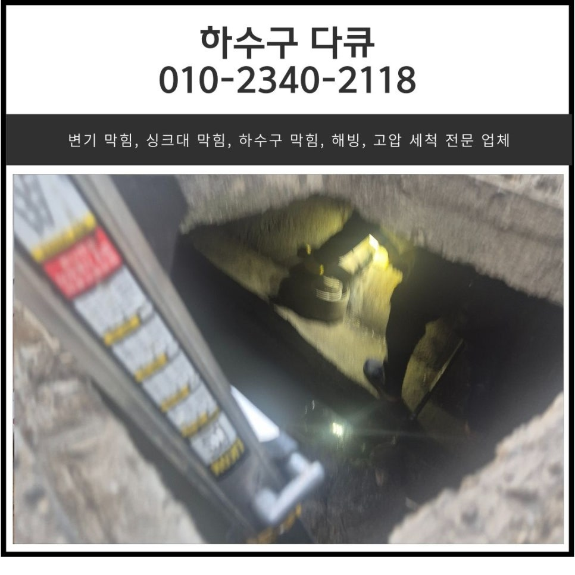
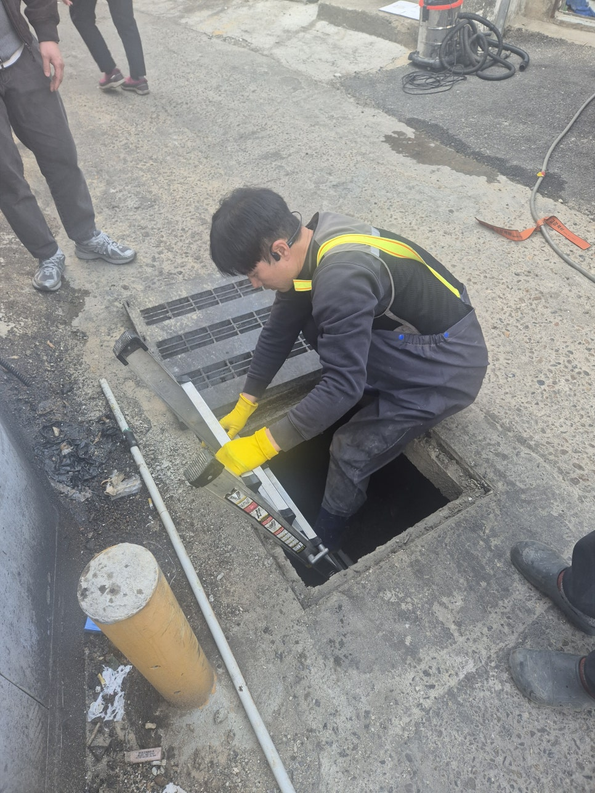
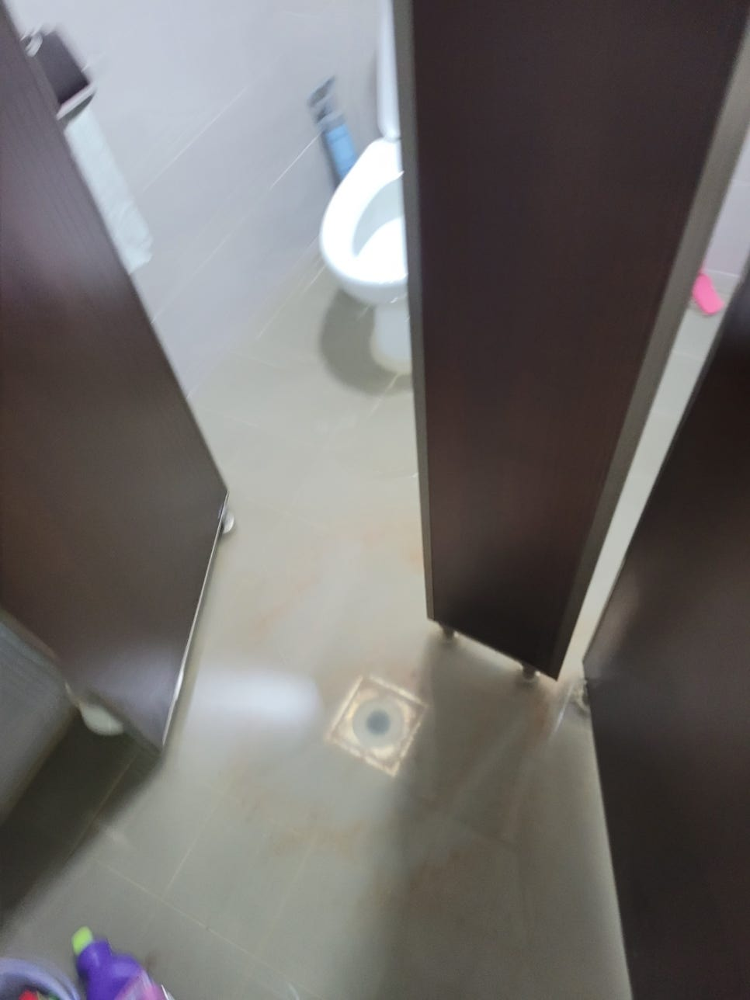
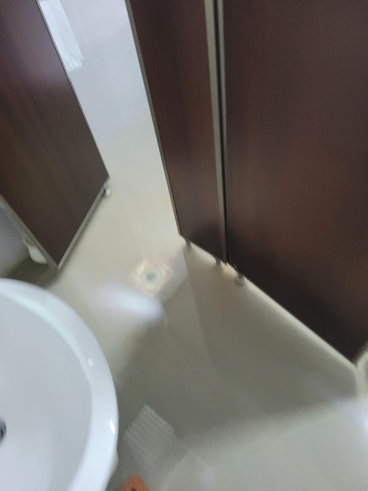
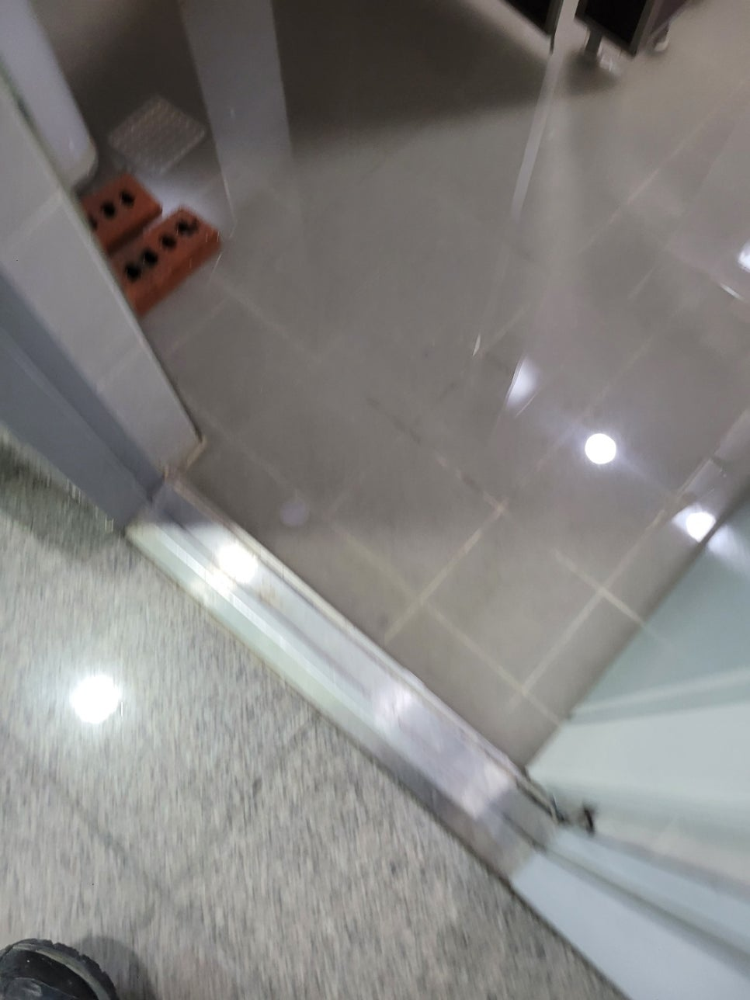
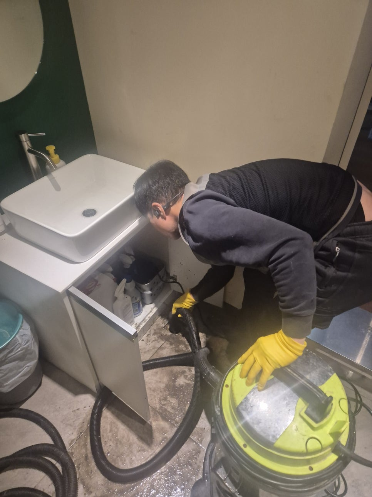
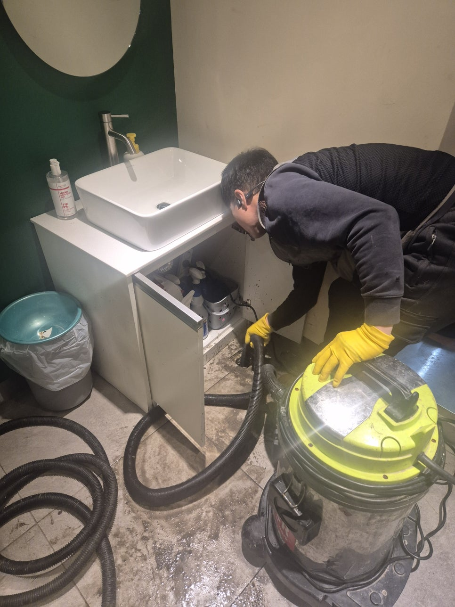

🏠 송탄동 상가 화장실 바닥 역류 평택 송탄 매장 세면대 하수구 막힘 해결 업체
평택 하수구막힘 전문 시공 후기

📋 작업 개요
- 위치: 평택
- 서비스 유형: 하수구막힘, 배관막힘, 역류해결, 뚫는업체, 배관청소
- 작업 일시: 2025. 3. 28. 20:01
- 업체명: 하수구수사대 (010-5615-2118)
🔍 문제 상황
안녕하세요.
송탄동 상가 화장실 바닥 역류, 평택 송탄 매장 세면대 하수구 막힘 해결 업체 하수구 다큐입니다.
송탄동 상가 화장실 바닥 역류와 평택 송탄 매장 세면대 하수구 막힘이 동시에 일어나는 일은 자주 발생하지 않지만, 발생할 경우 불편해지게 됩니다.
특히 상가 건물의 여러 매장이 하나의 메인 배관을 사용하는 경우도 많아 문제가 발생하면 빠르게 대처하셔야 합니다.
이번 포스팅에서는 매장 화장실 바닥과 세면대 하수구가 동시에 막히는 원인과 해결 방법을 소개해 드릴게요.
송탄동 상가 화장실 바닥 역류와 세면대 하수구가 동시에 막히는 이유
화장실 바닥과 세면대 하수구가 동시에 막히는 데에는 여러 가지 공통된 원인이 있는데요.

🔎 원인 분석
💡 전문가 진단: 정밀 진단 장비를 사용하여 슬러지의 고착 여부를 판명하고 타격/세척 작업을 실시했습니다.
기름 슬러지와 이물질 축적 : 건물의 주방과 화장실 배관이 연결된 구조라면, 음식물 찌꺼기와 기름 성분이 흘러들어가 막힘이 발생할 수 있습니다.
배관 구조 문제 : 건물의 구조 상 화장실과 세면대 배관이 하나로 합쳐지는 경우가 많아 한 군데가 막히게 되면 다른 배관도같이 막히게 됩니다.
사용 습관 : 불특정 다수가 사용하는 사용하는 상가 화장실의 특성상 사람들의 머리카락이나 물티슈, 흙 먼지 등 각종 이물질이 쌓여 막힐 수 있습니다.
2. 해결 방법
청소 : 하수구로 이물질이 들어가지 않도록 트랩을 설치해서 관리해 주거나 주변 청소를 자주 해주시는 게 좋습니다.
점검 및 교체 : 오래된 건물의 경우 배관이 노후되었을 경우 점검을 통해 확인하고 교체하는 것이 좋습니다.
하수구 막힘 해결 업체 : 하수구 전문가를 섭외해 막힘의 원인을 파악하고 배관 내부 깊숙한 곳까지 청소해 주셔야 합니다.

🔧 작업 과정
매장 화장실과 세면대 하수구가 같이 막히는 문제는 복합적인 원인이 작용할 수 있기 때문에 전문가를 섭외해 전문적인 장비를 이용하여 원인을 파악하고 적절한 조치를 취하시는 게 좋습니다.
점심 식사를 하는데 사장님께서 하수구 다큐의 차를 보시고는 화장실이 역류로 인해 난리가 났다며, 식사를 마치고 좀 봐주실 수 있는지 물어보셨어요.
식사를 서둘러 마무리하고 고객님과 함께 화장실로 들어가 보니 말씀해 주신 것처럼 바닥에서 물이 역류하고 빠져나가지 못하는 상태였습니다.
생각보다 역류하는 양이 많아 다른 손님들이 화장실을 사용하지 못하는 상태로 빠른 해결이 필요해 보였어요.
우선 화장실에 들어갈 수 있도록 석션을 이용해 바닥에 고인 물과 이물질부터 제거하는 작업을 서둘러 진행했습니다.
석션을 2번이나 비워야 할 정도로 양이 엄청났어요.
바닥에 고여있는 물과 이물질을 모두 제거한 다음 원인을 파악하기 위해 배관 전용 내시경 카메라를 이용해 점검해 보기로 했습니다.
석션으로 이물질을 제거한 바닥만 보셔도 짐작되듯이 배관 내부에는 각종 흙, 머리카락, 기름 슬러지 등 많은 양의 이물질로 인해 꽉 막혀있는 상태였어요.
고객님께 배관의 상태에 대해 안내해 드린 다음 전동 스프링을 이용해 평택 송탄 매장 세면대 하수구 막힘 해결해 보기로 했습니다.
전동 스프링은 모터로 회전하는 긴 스프링 와이어로, 내부에 쌓여있는 이물질을 뚫어 물길을 만들어주거나, 감아내어 제거해 주는 장비입니다.
중간중간 내시경 카메라로 이물질을 파악해가며 전동 스프링으로 작업한 결과 이물질을 제거하고 문제없이 통수되는 것을 확인하고 작업을 마무리할 수 있었습니다.


✅ 작업 완료
식당 사장님께서는 화장실에서 역류가 발생하는 것을 보고 눈앞이 캄캄했는데 제가 식당에서 식사하고 있었던 게 행운이었다며 빨리 해결해 줘서 고맙다고 해주셨어요.
하수구 다큐도 식사하다 일하게 되는 경우는 처음이라 당황스럽기도 했지만 즐거운 현장이었습니다.
경기도 화성시 동탄대로 677-10 7층 715-A10호




⚠️ 하수구 배관 막힘 예방 및 관리 가이드
- ✅ 머리카락, 비닐, 물티슈 등 물에 분해되지 않는 이물질은 하수구 유입을 절대 금지해 주세요.
- ✅ 하수구 거름망을 씌우고 모여진 이물질은 주기적으로 쓰레기통에 바로 비워주셔야 합니다.
- ✅ 배관 노후가 심할 경우 이물질이 더 쉽게 걸리므로 주기적인 배관 세척(고압세척 등)을 권장합니다.
- ✅ 작업 후 1년 이내 재발 시 하수구수사대에서 무상 A/S 보증 서비스를 제공합니다.
💡 핵심 정리
- 확실한 장비 작업(내시경 점검 및 샤프트 스케일링)으로 원인을 뿌리 뽑습니다.
- 작업 후 1년 이내에 동일한 부위 재발 시 100% 무상 A/S 서비스를 보장합니다.
- 서울 · 경기 · 인천 전 지역에 24시간 언제든 긴급 출동할 수 있도록 항시 대기 중입니다.
❓ 자주 묻는 질문 (FAQ)
🚨 평택 하수구막힘 문제로 고민이신가요?
정확한 원인 진단과 확실한 시공으로 재발 없는 해결을 약속드립니다.
24시간 긴급 출동 | 서울 · 경기 · 인천 전지역 | 1년 내 재발 시 무상 A/S